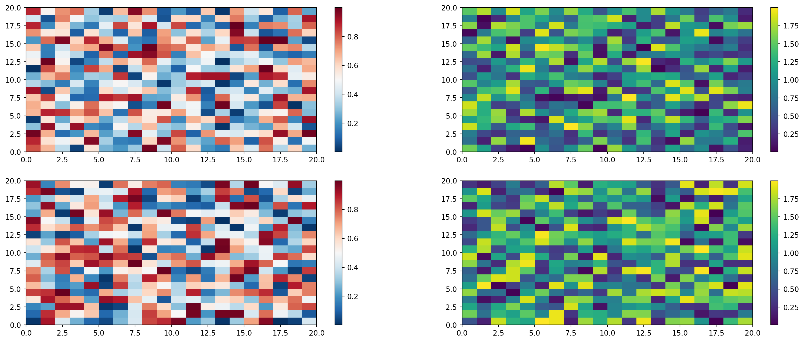

Code
1 + 121 + 12For a demonstration of a line plot on a polar axis, see Figure 1.
import matplotlib.pyplot as plt
import numpy as np
r = np.arange(0, 2, 0.01)
theta = 4 * np.pi * r
fig, ax = plt.subplots(subplot_kw={'projection': 'polar'})
ax.plot(theta, r)
ax.set_rticks([0.5, 1, 1.5, 2])
ax.grid(True)
plt.show()Colorbars indicate the quantitative extent of image data. Placing in a figure is non-trivial because room needs to be made for them. The simplest case is just attaching a colorbar to each axes:1.
1 See the Matplotlib Gallery to explore colorbars further
import matplotlib.pyplot as plt
import numpy as np
fig, axs = plt.subplots(2, 2)
fig.set_size_inches(20, 8)
cmaps = ['RdBu_r', 'viridis']
for col in range(2):
for row in range(2):
ax = axs[row, col]
pcm = ax.pcolormesh(
np.random.random((20, 20)) * (col + 1),
cmap=cmaps[col]
)
fig.colorbar(pcm, ax=ax)
plt.show()
Einstein’s theory of special relatively that expresses the equivalence of mass and energy:
\(E = mc^{2}\)